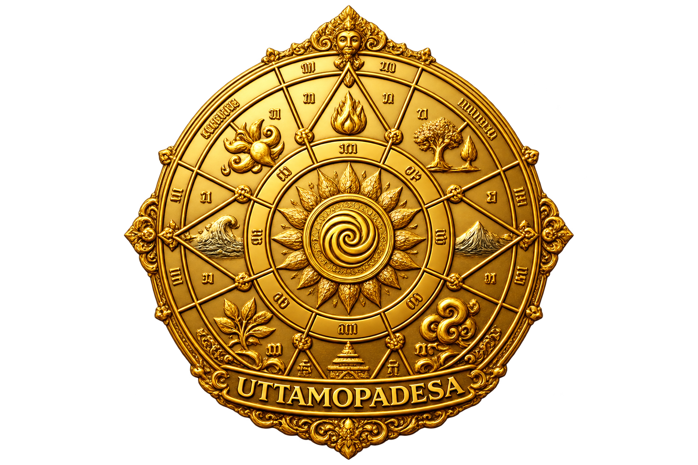

Kawruh dan Laku Kehidupan
Selamat datang di laman dokumentasi Kawruh Uttamopadesa, sebuah kawruh yang mengarahkan manusia untuk memahami hakikat kehidupan dan menerapkannya dalam laku sehari-hari.
Kawruh Uttamopadesa dirumuskan oleh Dhimas Purnomo sebagai penjabaran Kawruh Sejati dalam pemahaman dan laku kehidupan manusia.
Kawruh Uttamopadesa menekankan pemurnian cipta, ketulusan rasa, dan keutamaan karsa dalam menjalani kehidupan.
Kawruh Uttamopadesa berlandaskan pemahaman mengenai hakikat kehidupan, kesadaran diri, budi pekerti, dan tanggung jawab manusia dalam menjalani kehidupan.
Pemahaman tidak berhenti pada pengetahuan, tetapi diwujudkan dalam laku nyata.
Pedoman Dasar Kawruh Uttamopadesa
Landasan dasar untuk memahami Kawruh Uttamopadesa.
Dokumentasi lengkap mengenai Kawruh Uttamopadesa dapat dibaca melalui blog utama.